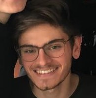

I'm a Stanford student. I like harware, AI and creating / managing teams. I bring a process-centric mindset to all my work.
Philip Mateo Pfeffer
a.k.a. Yung Commit -m
ME

MY ORGANISATIONS
The Creator's Community
Product Hub of Stanford Students
We are creating Stanford’s go-to place for future founders to make building side-projects into a relentless, achievable habit. I founded & am growing community. Our first ‘Gap Month’ of three themed houses - 15 total future founders - has just wrapped. Currently, we're interviewing the next cohort of aspiring founders (please get in touch!) for admission to the second Gap Month.
FLEX Quarter
I run an intensive weekly workout group for friends, FLEX Quarter. Here's the site: flexquarter.co.uk/
MY PROJECTS
Haptic Vest
What is it?
Imagine being visually impaired but still able to feel the movement of surrounding crowds and cars on your body. Imagine being a peacekeeper but resting assured that unexpected movements behind you will be transduced into your shirt. Imagine being a twenty year-old playing Pokémon Go and receiving a haptic vibration pointing you towards your next catch. This can be achieved by wearing a 'haptic vest' that uses a camera to capture images, a computer vision model to process them and coin-sized vibration motors that vibrate the shirt to communicate the output.
Why this project?
I wanted to learn about AI computer vision on the edge. This application allows me to learn about and experiment with AI on hardware while building a full end-to-end project. I have been trying out ideas to make computer vision better on edge devices without needing to build a full self-driving car :). Further, I love the idea of an AI driven world, like that presented in Daemon and FreedomTM by Daniel Suarez.